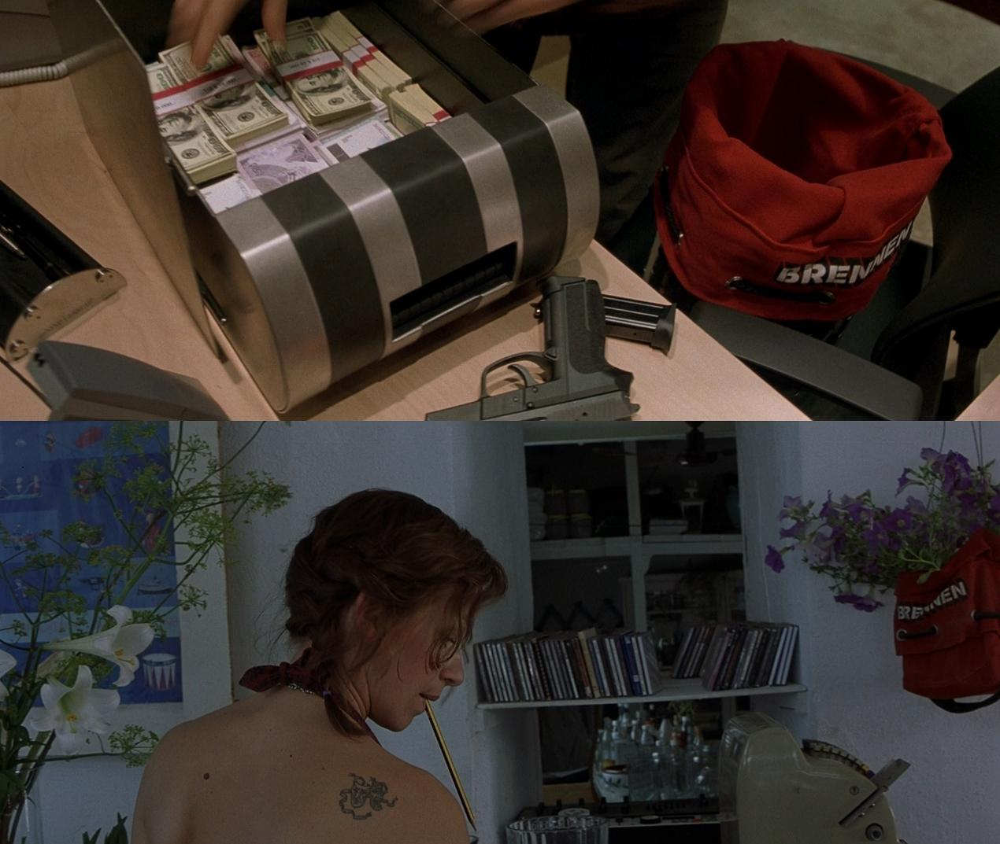
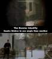
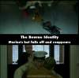

About: A man is picked up by a fishing boat, bullet-riddled and suffering from amnesia, before racing to elude assassins and attempting to regain his memory.
Directed By: Doug Liman
Starring: Matt Damon, Franka Potente, Chris Cooper
Easter Egg!
The Money Bag

The money bag Bourne takes from Switzerland makes it into the final scene as a plant pot.
Movie Mistakes!
The Explosion

When Bourne blows up the tank at the farmhouse, the wide shots show a solid wall of black smoke. In the closer shots there's nowhere near as much. The smoke in the first shot must be coming from the explosion, and in the closer shot we're looking right at the destroyed tank, so it can't be due to different angles.
The Marine's Hat

In the part of the embassy scene where Matt Damon starts clobbering security people, the Marine's hat falls off no less than three times.